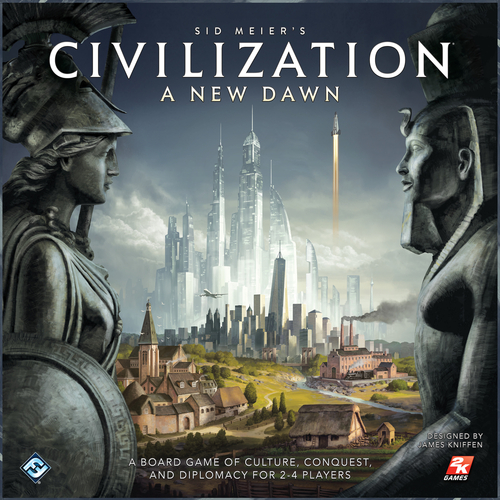

Mängi ümber ajalugu koos Sid Meieri Civilization: A New Dawn lauamänguga. Sid Meieri Civilization: New Dawn on käigupõhiline strateegiline lauamäng, kus kaks kuni neli mängijat tegutsevad ajaloo kõige meeldejäävate impeeriumide juhtidena. Mäng põhineb klassikalisel videomängude seerial. Mängu käigus laiendavad mängijad oma valdkondi, omandavad uusi tehnoloogiaid ja loovad paljusid inimkonna suurimaid imesid. Ehita, kauple, avasta ja vii oma rahvas võiduni! Lõpuks tõuseb üks rahvas üle kõigi teiste, et jätta oma märk ajalukku.
